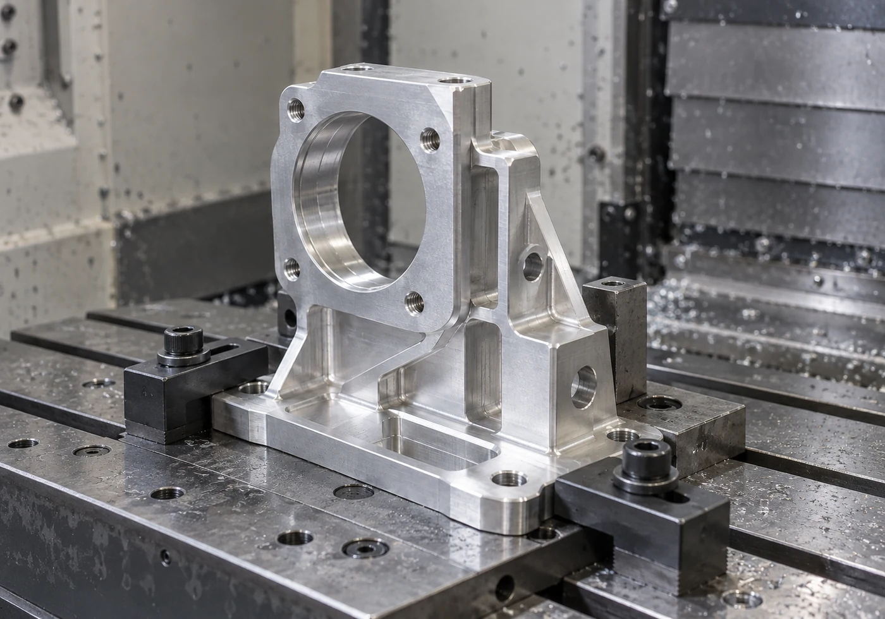
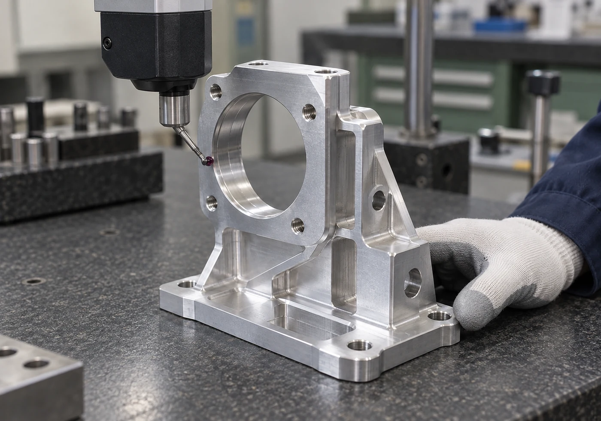
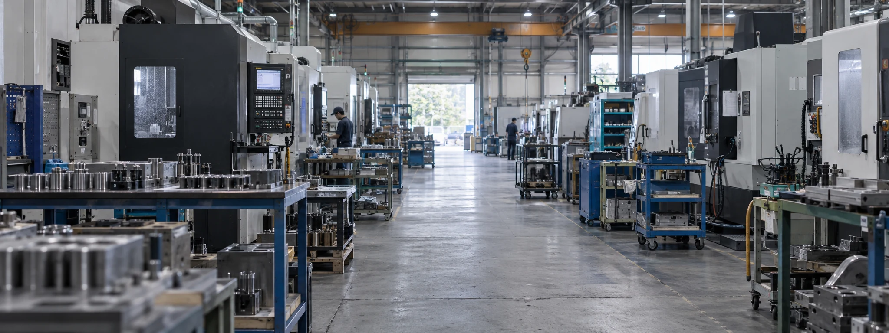

WORK 01 / CASE STUDY
検査装置用
ブラケット
薄肉形状の変形を抑えるため、保持方法と加工順序を検討。
構成確認用の仮事例

OVERVIEW
完成形だけでなく、
判断の過程を伝える。
薄肉形状の部品は、加工中の保持方法や削る順序によって変形の出方が変わります。本事例では、図面確認の段階から加工後の検査までを一つの工程として整理した想定です。
※掲載内容は構成確認用の仮事例です。実在案件の性能や納期を示すものではありません。
01 CHALLENGE
薄肉部の変形を、
加工前から考える。
削る量や保持する位置によって、仕上がりの安定性が変わる形状。どこを基準に保持し、どの順序で加工するかを相談時点から整理します。

02 CONSIDERED POINTS
加工の前に、三つの判断をそろえる。
- 01
保持方法
薄肉部へ負荷が集中しない基準面と固定位置を検討。
- 02
加工順序
荒加工と仕上げの順序を分け、変形の影響を抑える想定。
- 03
検査基準
加工後に確認する寸法・外観の観点を先に共有。
03 PROCESS & QUALITY
加工と確認を、ひと続きの工程に。
- 01
形状確認
薄肉部・基準面・加工範囲を整理
- 02
保持方法の検討
固定位置と工具経路の干渉を確認
- 03
荒加工・仕上げ
加工順序を分けて負荷を調整
- 04
寸法・外観確認
合意した観点で加工後を確認

04 SPECIFICATION
事例仕様
構成確認用の仮設定
| 材料 | アルミニウム |
|---|---|
| 加工 | 切削 |
| 用途 | 検査装置 |
| 相談課題 | 薄肉形状の変形抑制 |
| 図面・数値仕様 | 非掲載（正式情報未確定） |

お問い合わせContact図面がなくても、分かる範囲からご相談ください。